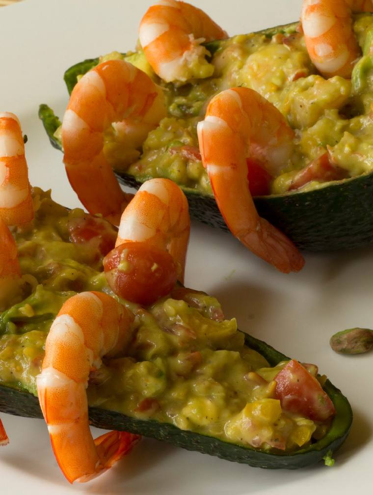

Entrées

Entrées
Salade tropicale aux crevettes
Préparation : 20 min
Ingrédients (pour 6 personnes)
- 24 crevettes cuites
- 1 ananas
- 3 avocats
- 1 poivron rouge
- 1 citron vert
- 4 cuillères à soupe d’huile d’olive
- mâche
- coriandre
- sel, poivre
Quantités adaptées. Les temps de cuisson ne sont pas recalculés.
- Décortiquer les crevettes, couper ananas et poivron en dés.
- Les mélanger avec la coriandre ciselée, arroser de jus de citron vert.
- Au dernier moment, ajouter avocats en lamelles et mâche, huile, sel et poivre.
- Servir bien frais, dans les demi-écorces d’ananas évidées si on veut.
D’après une fiche Mes recettes Leclerc. Texte reformulé, citron vert à la place du citron.